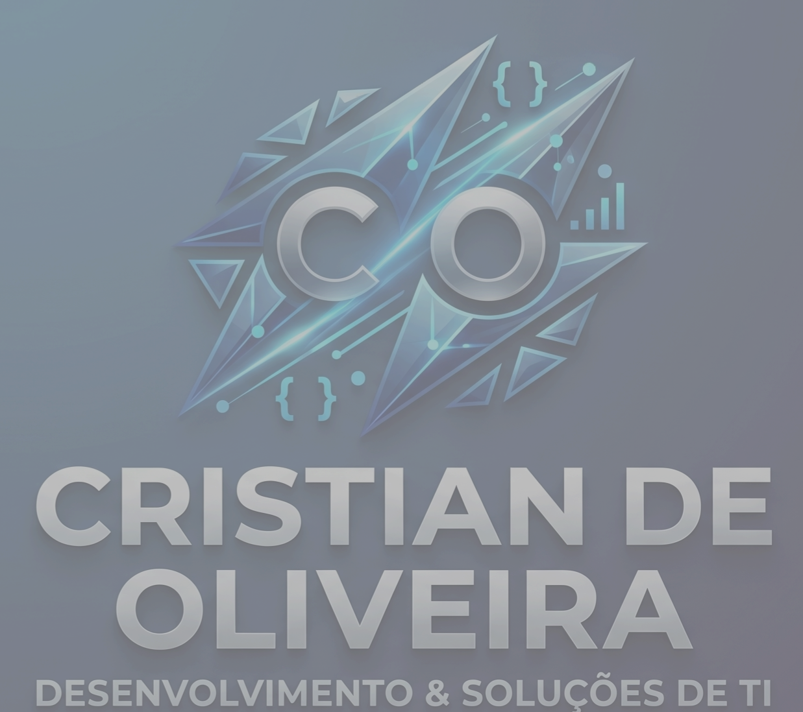
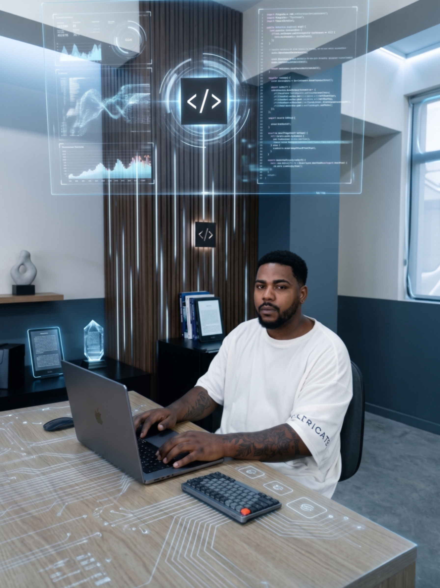
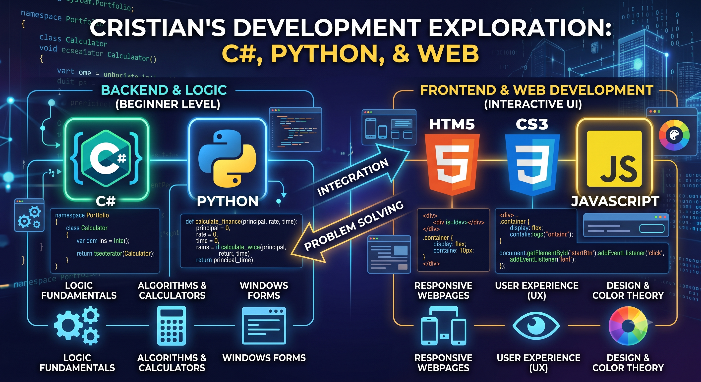
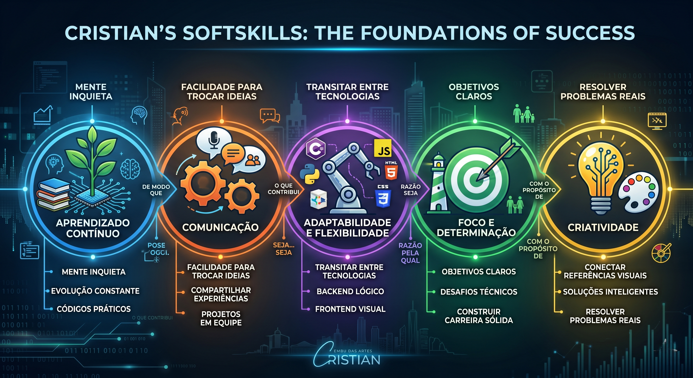

CONTATO
.png) :(31)99574-6787
:(31)99574-6787  :@Criss_zzz
:@Criss_zzz  :@/Cristian de Oliveira
:@/Cristian de Oliveira  :crisszz01
:crisszz01
:(31)99574-6787 :@Criss_zzz :@/Cristian de Oliveira :crisszz01 

Estudante de Desenvolvimento de Sistemas na Etec de Embu das Artes. Sou um entusiasta da tecnologia focado em transformar lógica em soluções digitais eficientes e inteligentes. Acredito que a programação vai além do código: é sobre resolver problemas reais e construir experiências fluidas. Para isso, mantenho uma rotina de aprendizado contínuo. 🌟 Além do Código Fora das telas, busco repertório nas conexões humanas e no lazer: ⚽ Apaixonado por futebol, seja jogando ou assistindo. 🍳 Gosto de testar novas receitas na culinária. 🎵 A música é minha trilha sonora essencial para programar e relaxar. 💬 Valorizo uma boa conversa e a troca de experiências. Minha maior motivação diária é minha família. É por eles que busco evoluir constantemente, encarar novos desafios com determinação e construir uma carreira sólida na tecnologia.


:(31)99574-6787 :@Criss_zzz :@/Cristian de Oliveira :crisszz01